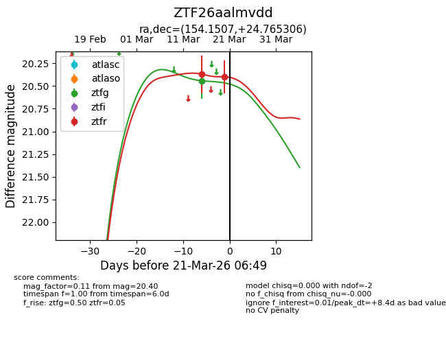
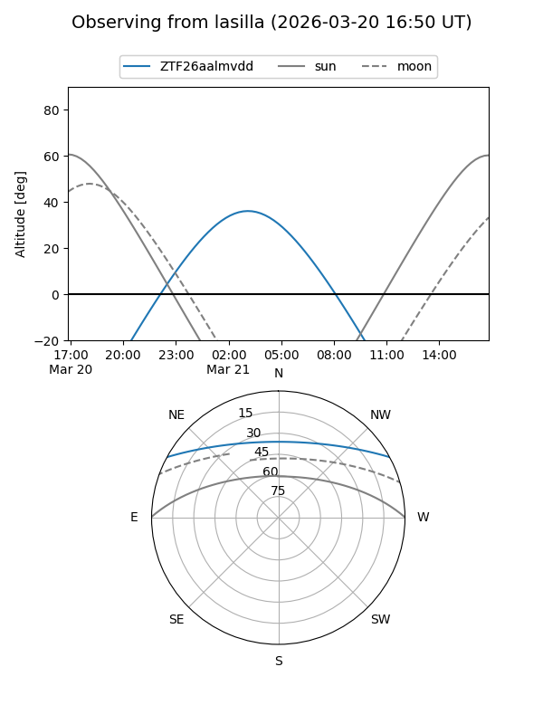
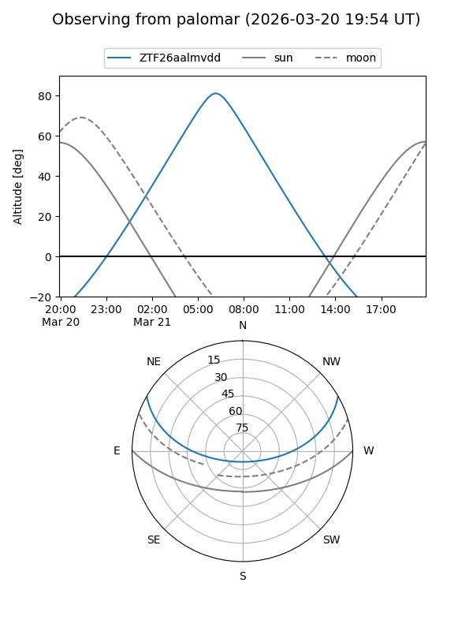
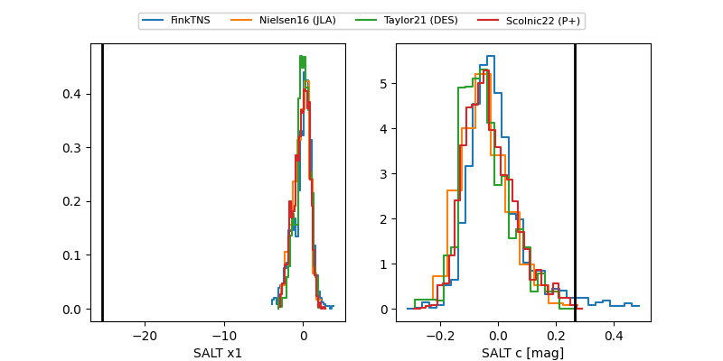

ZTF26aalmvdd
Target ZTF26aalmvdd at 2026-03-21 06:51
Aliases and brokers:
FINK: link
Lasair: link
ALeRCE: link
alt names
ZTF26aalmvdd (ztf,fink_ztf)
Coordinates:
equatorial (ra, dec) = 154.1507,+24.76531
equatorial (HMS+DMS) = 10:16:36.18,+24:45:55.10
galactic (l, b) = (207.9277,+55.24832)
Flags:
Photometry:
last ztfg=20.44, ztfr=20.40
1 ztfg, 2 ztfr detections
Lightcurve

Visibility


Additional plots
